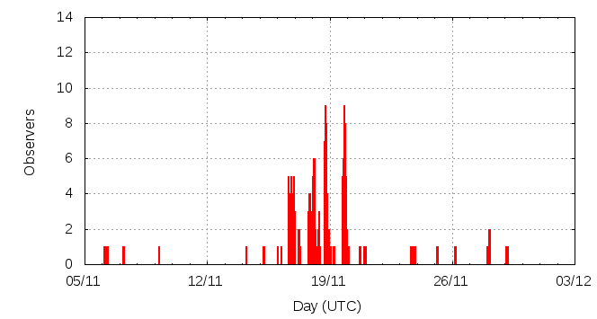

[ www.imo.net ]
This page shows automated results of the Leonids 2011, based on visual observations by volunteers astronomers collected through the report form of the International Meteor Organization (IMO). The information on this page is generated automatically; for scientific use please refer to manual analyses published in scientific journals (such as WGN). Send your feedback regarding this page to Geert Barentsen.
Page contents:
Note that the data will finally go into the Visual Meteor Database (VMDB) with manual inspection and rectifications. We are curretly completing the files of 2008-2011. The VMDB is an enormous project - any help will be greatly appreciated.
Page generated: 2012 January 18 at 15:15 UTC.
The graph below shows the ZHR (Zenithal Hourly Rate), which is the number of meteors an observer would see under a very dark sky with the radiant of the shower in zenith.
ZHRmax = 22 based on 258 Leonids reported in 125 intervals, assuming population index r = 2.5

| Time (UTC) | Solarlon | nINT | nLEO | ZHR | Particle density | |
|---|---|---|---|---|---|---|
| 2011-11-06 15:18 | 223.696 | 5 | 6 | 2 | ±1 | 4 / 109·km3 |
| 2011-11-09 05:51 | 226.310 | 1 | 4 | 6 | ±3 | 12 / 109·km3 |
| 2011-11-14 18:01 | 231.845 | 2 | 13 | 11 | ±3 | 22 / 109·km3 |
| 2011-11-17 04:18 | 234.291 | 26 | 53 | 17 | ±2 | 33 / 109·km3 |
| 2011-11-18 03:29 | 235.265 | 17 | 60 | 22 | ±3 | 43 / 109·km3 |
| 2011-11-18 18:13 | 235.884 | 38 | 54 | 17 | ±2 | 33 / 109·km3 |
| 2011-11-20 00:25 | 237.154 | 23 | 49 | 15 | ±2 | 29 / 109·km3 |
| 2011-11-24 06:53 | 241.467 | 3 | 5 | 6 | ±2 | 12 / 109·km3 |
| 2011-11-27 07:38 | 244.534 | 5 | 3 | 1 | ±0 | 2 / 109·km3 |
| 2011-11-28 13:42 | 245.803 | 5 | 11 | 3 | ±1 | 6 / 109·km3 |
The reported intervals are automatically added together into the bins shown above, based on the number of meteors and the distribution of the intervals. For each bin, the following parameters are computed:
Data has been received from 30 observers in 15 countries. Thank you for your efforts!
Note: click on the map for an interactive version.

| Observer | Country | Teff | nLEO |
|---|---|---|---|
| Alexandre Amorim | Brazil | 2.04h | 1 |
| Zsofi Biro | Hungary | 4.00h | 27 |
| Students Bsu | Russia | 20h | 43 |
| Yuguang Chen | China | 1.50h | 9 |
| Apurva Chordia | India | 1.00h | 2 |
| Khimaram Chuadhary | India | 4.34h | 4 |
| William Godley | United States | 1.00h | 2 |
| Karoly Jonas | Hungary | 3.00h | 6 |
| Javor Kac | Slovenia | 1.74h | 2 |
| Shalmalee Kapse | India | 1.00h | 2 |
| Zheng Kuang | China | 1.67h | 1 |
| Alexandr Maidik | Ukraine | 0.55h | 1 |
| Qiang Ma | China | 1.00h | 6 |
| Pierre Martin | Canada | 1.12h | 0 |
| Jozsef Morvai | Hungary | 3.00h | 12 |
| Piraji Patil | India | 4.04h | 3 |
| Pramila Patil | India | 7.27h | 9 |
| Shalan Patil | India | 10.86h | 20 |
| Jurgen Rendtel | Germany | 25h | 108 |
| Jiangao Ruan | China | 1.17h | 3 |
| Jiangao Ruan | China | 4.42h | 3 |
| Aguirre Salvador | Mexico | 2.00h | 6 |
| Francisco José Sevilla Lobato | Spain | 0.60h | 3 |
| Richard Taibi | United States | 2.97h | 10 |
| Istvan Tepliczky | Hungary | 0.50h | 2 |
| Sonal Thorve | India | 1.00h | 0 |
| Michel Vandeputte | Belgium | 12.47h | 15 |
| Jakub Koukal | Czech Republic | 4.00h | 29 |
| Bingqi Tong | China | 1.72h | 7 |
| Shigeo Uchiyama | Japan | 2.00h | 4 |
| Tejaswini Varade | India | 10.96h | 38 |
| Kiran Wani | India | 2.33h | 0 |
| Kiran Wani | India | 2.99h | 3 |
| Weizhou Zeng | China | 1.47h | 8 |
Create your own analysis. The files below can be opened using Excel:
leo2011_rate.csv (number of meteors per interval per observer)
leo2011_magn.csv (number of meteors per magnitude bin per observer)
The information on this page may be distributed freely provided credit is given to the International Meteor Organization (IMO) and, when possible, to the individual observers. The computer facilities to generate this page are provided by ESA/RSSD and Armagh Observatory.
References: